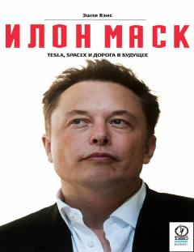

ИМIlon Maskning hayoti, Tesla va SpaceX kompaniyalari tarixi haqidagi qiziqarli biografik kitob.
Ushbu kitob mashhur tadbirkor va innovator Ilon Maskning hayoti, faoliyati hamda Tesla va SpaceX kabi kompaniyalarning yaratilish tarixiga bag'ishlangan. Muallif ikki yuzdan ortiq insonlar bilan intervyu o'tkazib, Maskning dunyoqarashi, muvaffaqiyatlari va duch kelgan qiyinchiliklarini haqqoniy yoritib bergan. Asar o'quvchilarni yangi marralarni zabt etishga va kelajak sari intilishga ilhomlantiradi.